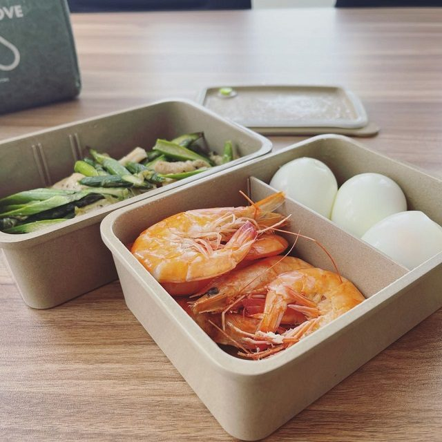

Most restaurants that contact us are not shopping for something greener. They are replacing melamine that has gone chalky, or disposable packs that customers photograph and complain about, or ceramic that keeps coming back chipped. Rice husk earns its place on the pass because it survives a commercial wash cycle, stacks like the plastic it replaces, and reads as ceramic to the guest. This page is the operator's side of that decision: what to stock, what to put in the spec sheet, how the cost math actually works, and how to run a pilot that tells you the truth in three weeks.

Operators who buy a full catalogue end up with a shelf of pieces nobody plates on. These are the ones that earn their space in a café or a small restaurant group, with where each one sits in service.
| SKU | Where it earns its place | What to check before you order |
|---|---|---|
| Round plate | Main plates for breakfast, pasta, salads, sharing boards. | Rim width against your portion style; a wide rim eats plating area you paid for. |
| Compartment plate | Set menus, canteen-style lines, kids' meals, tasting flights. | Compartment depth — shallow dividers let sauces run between sections. |
| Bowl | Soups, grain bowls, desserts, side salads. | Whether your dishwasher rack holds it rim-down without pooling water. |
| Cup / tumbler | Espresso and filter coffee, iced drinks, water service. | Handle clearance if you use under-counter racks; wall thickness if you serve very hot drinks. |
| Serving tray | Table service, buffets, delivery handoff, clearing. | Loaded weight and whether it flexes when carried one-handed. |
| Lunch box | Takeaway that is meant to come back, staff meals, delivery programs. | Lid fit after 30 wash cycles — this is the first thing to fail on any reusable box. |
A workable starting point for a single-site café is three SKUs, not six: one plate, one bowl, one cup. Prove the wash cycle on those before adding the rest.
Send this list with your inquiry and the quotation you get back will be comparable to the next supplier's instead of three weeks of clarification.
Diameter or length, height, and the weight you expect. Weight is the honest proxy for density — a piece that feels light will chip at the rim in a busy pass.
"Natural" and "beige" are not specifications. Give a Pantone number, or accept our stock colors so the first order ships without a color-matching round.
Molded or printed, size, position, and one-color or multi-color. Both methods start at 1,000 pieces per design.
Inner packs per carton, carton weight your staff can lift, and barcode format if the goods go into a central warehouse rather than straight to the site.
The material is rice husk fiber bound with food-grade starch, hot pressed at 180°C and above. That cure is what makes the surface hold up, and it is also why the care rules are short.

We do not publish prices — B2B tableware is quoted against a spec, a quantity and a shipping lane. But the model you use to decide is the same for every supplier, so here it is.
| Line | How to work it out |
|---|---|
| Unit landed cost | FOB price plus freight, duty and your own handling, divided by pieces. Ask for this number rather than the FOB figure — freight can swing the ranking between two suppliers. |
| Breakage and loss | Assume a replacement rate per year. Rice husk chips rather than shatters, and a chipped piece can often finish as a prep or back-of-house item. |
| Wash cost | Rack space and cycle time per cover, not the price of detergent. A piece that does not fit your rack costs more than it looks. |
| Disposables baseline | Count the disposable pieces actually consumed per week, not per cover. This is the number that decides whether reusables pay back in one season or three. |
| The honest answer | For a venue doing serious volume, the crossover usually lands inside the first year or two. For a low-volume café with expensive labour, it may not land at all — and we will say so rather than sell you a container. |
Send your covers per week, the disposable items you buy now, and your wash setup. We will run the comparison with our quoted numbers and show the working, including the case where the answer is "keep what you have".
| Week | What happens |
|---|---|
| Week 1 — sample | We send stock-color samples of your three SKUs. Put them through your own wash cycle twice a day, in the same rack as everything else. Do not treat them gently; you are testing the worst case. |
| Week 2 — pilot service | Run 20 to 30 covers of the top three dishes on the pilot pieces. Staff handle them exactly as they would the old stock. Collect three facts: how the plate photographs, how it feels when wet, whether the rack holds it. |
| Week 3 — decision | Compare chipping, staining and wash results against your current tableware. If it passes, place the production order with the logo; if it fails on a specific point, that point goes into the specification and the next sample round. |
Ask for the test reports in the same round as the samples. They are not a substitute for the pilot, and the pilot is not a substitute for them.
| Question | Answer |
|---|---|
| Does it look like plastic? | No. It reads as a warm matte ceramic or wood tone. The surface has a natural fleck from the husk fiber and a light sheen from rice-bran wax that forms during pressing. |
| How much do we need to start? | Work from covers per service, two turns and a wash buffer. A pilot of 20 to 30 covers on three SKUs is usually a few hundred pieces — enough to test the pass without a container commitment. |
| Can we brand it? | Yes, molded or printed, from 1,000 pieces per design. Molded needs tooling and is better for a permanent house brand; printed suits seasonal menus and multi-venue groups. |
| What about a reorder? | Stock colors run on a normal production cycle. New colors or new tooling add sampling time — typically two to three weeks for colored samples — and we put the full calendar in the quotation. |
| Is it dishwasher safe? | Yes — hand washing, or a standard dishwasher cycle. Send your machine type and detergent and we confirm the care protocol for your SKU before you order. |
Tell us your covers per week, the disposable items you buy today and your wash setup. We will send samples and a cost comparison with the working shown.